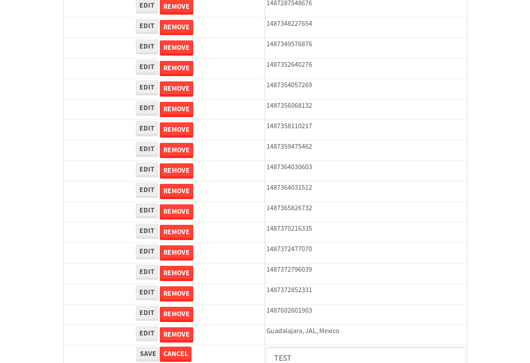

tbColumn.Grid Sorting - 29.278sTests: 5Skipped: 0Failures: 0 should sort data in ascending order then on descending order when sorting by Order Id column - 7.708sTests passed: 100.00%should order data in ascending order when click-sorting an unsorted text column - 5.006sTests passed: 100.00%should order data in descending order when click-sorting an ascending-sorted text column - 5.609sTests passed: 100.00%should order data in ascending order when click-sorting an unsorted date column - 4.971sTests passed: 100.00%should order data in descending order when click-sorting twice an unsorted date column - 5.983sTests passed: 100.00%
tbColumn.Grid Components - 5.199sTests: 3Skipped: 0Failures: 0 should print grid - 1.674s***Skipped***Tests passed: 0%should export grid - 1.693s***Skipped***Tests passed: 0%should show column selector - 1.832sTests passed: 100.00%
tbSingleForm.Form validations - 2.839sTests: 2Skipped: 0Failures: 0 should have an empty required field - 1.804sTests passed: 100.00%should not be able to click on save - 1.034sTests passed: 100.00%
Tubular Filters.tbColumnFilter - 110.374sTests: 12Skipped: 0Failures: 0 should cancel filtering when clicking outside filter-popover - 9.325sTests passed: 100.00%should disable Value text-input for "None" filter - 6.745sTests passed: 100.00%should disable apply button for "None" filter - 6.834sTests passed: 100.00%should decorate popover button when showing data is being filtered for its column - 12.252sTests passed: 100.00%should correctly filter data for the "Equals" filtering option - 8.663sTests passed: 100.00%should correctly filter data for the "Not Equals" filtering option - 8.604sTests passed: 100.00%should correctly filter data for the "Contains" filtering option - 8.275sTests passed: 100.00%should correctly filter data for the "Not Contains" filtering option - 9.806sTests passed: 100.00%should correctly filter data for the "Starts With" filtering option - 7.963sTests passed: 100.00%should correctly filter data for the "Not Starts With" filtering option - 6.9sTests passed: 100.00%should correctly filter data for the "Ends With" filtering option - 6.751sTests passed: 100.00%should correctly filter data for the "Not Ends With" filtering option - 7.099sTests passed: 100.00%
Tubular Filters.tbColumnDateTimeFilter - 139.989sTests: 12Skipped: 0Failures: 0 should cancel filtering when clicking outside filter-popover - 7.527sTests passed: 100.00%should disable Value text-input for "None" filter - 7.039sTests passed: 100.00%should disable apply button for "None" filter - 7.134sTests passed: 100.00%should clear filtering when clicking on Clean button - 18.508sTests passed: 100.00%should decorate popover button when showing data is being filtered for its column - 12.392sTests passed: 100.00%should correctly filter data for the "Equals" filtering option - 7.206sTests passed: 100.00%should correctly filter data for the "Not Equals" filtering option - 7.521sTests passed: 100.00%should correctly filter data for the "Between" filtering option - 12.2sTests passed: 100.00%should correctly filter data for the "Greater-or-equal" filtering option - 12.02sTests passed: 100.00%should corretlly filter data for the "Greater" filtering option - 12.665sTests passed: 100.00%should correctly filter data for the "Less-or-equal" filtering option - 12.449sTests passed: 100.00%should correctly filter data for the "Less" filtering option - 12.329sTests passed: 100.00%
Tubular Filters.tbColumnOptionsFilter - 82.815sTests: 3Skipped: 0Failures: 0 should cancel filtering when clicking outside filter-popover - 9.934sTests passed: 100.00%should decorate popover button when showing data is being filtered for its column - 11.9sTests passed: 100.00%should filter column-elements in accordance to the selected filter when selecting a single option - 49.661sTests passed: 100.00%
Tubular Filters.tbTextSearch - 48.997sTests: 5Skipped: 0Failures: 0 min-chars is not set - 1.189sTests passed: 100.00%should filter data in searchable-column customer name to matching inputted text, starting from 3 characters - 6.932sTests passed: 100.00%should filter data in searchable-column shipper city to matching inputted text, starting from 3 characters - 12.353sTests passed: 100.00%should show clear button when there is inputted text only - 6.527sTests passed: 100.00%should clear filtering when clicking clear button - 16.672sTests passed: 100.00%
tbForm related components.tbCheckboxField - 8.814sTests: 2Skipped: 0Failures: 0 should save changes on "SAVE" - 4.06sTests passed: 100.00%should discard changes on "CANCEL" - 2.442sTests passed: 100.00%
tbForm related components.tbDropDownEditor - 13.184sTests: 5Skipped: 0Failures: 0 should set initial input value to the value of "value" attribute when defined - 2.053sTests passed: 100.00%should show the component name value in a label field when "showLabel" attribute is true - 1.891sTests passed: 100.00%should show a help field equal to this attribute, is present - 2.169sTests passed: 100.00%should submit modifications to item/server when clicking form "Save" - 3.687sTests passed: 100.00%should NOT submit modifications to item/server when clicking form "Cancel" - 2.648sTests passed: 100.00%
tbForm related components.tbTextArea - 21.562sTests: 7Skipped: 0Failures: 0 should set initial input value to the value of "value" attribute when defined - 2.008sTests passed: 100.00%should be invalidated when the number of chars is not in the range of "min" and "max" attributes - 4.437sTests passed: 100.00%should show the component name value in a label field when "showLabel" attribute is true - 2.717sTests passed: 100.00%should show a help field equal to this attribute, is present - 1.936sTests passed: 100.00%should require the field when the attribute "required" is true - 2.486sTests passed: 100.00%should submit modifications to item/server when clicking form "Save" - 4.239sTests passed: 100.00%should NOT submit modifications to item/server when clicking form "Cancel" - 2.915sTests passed: 100.00%
tbForm related components.tbDateEditor - 15.331sTests: 6Skipped: 0Failures: 1 should set initial date value to the value of "value" attribute when defined - 2.045sTests passed: 100.00%should be invalidated when the date is not in the range of "min" and "max" attributes - 2.742sTests passed: 100.00%should show the component name value in a label field when "showLabel" attribute is true - 2.016sTests passed: 100.00%should show a help field equal to this attribute, is present - 1.989sTests passed: 100.00%should submit modifications to item/server when clicking form "Save" - 3.093sExpected false to be true.✗Tests passed: 0.00%should NOT submit modifications to item/server when clicking form "Cancel" - 2.462sTests passed: 100.00%
tbForm related components.tbTypeaheadEditor - 18.165sTests: 7Skipped: 0Failures: 0 should show an options list when there is an API-info/component entered-data - 2.303sTests passed: 100.00%should select the option clicked - 2.404sTests passed: 100.00%should show a "delete" button when an option/match is selected, and delete the option if button is clicked - 3.011sTests passed: 100.00%should show a label value equal to the component name when "showLabel" attribue is true - 1.966sTests passed: 100.00%should require a value when "require" attribute is true - 2.286sTests passed: 100.00%should submit modifications to item/server when clicking form "Save" - 3.212sTests passed: 100.00%should NOT submit modifications to item/server when clicking form "Cancel" - 2.183sTests passed: 100.00%
tbForm related components.tbSimpleEditor - 24.357sTests: 9Skipped: 0Failures: 0 should set initial input value to the value of "value" attribute when defined - 2.269sTests passed: 100.00%should be invalidated when the number of chars is not in the range of "min" and "max" attributes - 2.391sTests passed: 100.00%should show the component name value in a label field when "showLabel" attribute is true - 1.787sTests passed: 100.00%should set input placeholder to the value of "placeholder" attribute - 2.201sTests passed: 100.00%should validate the control using the "regex" attribute, if present - 2.191sTests passed: 100.00%should show a help field equal to this attribute, is present - 2.306sTests passed: 100.00%should require the field when the attribute "required" is true - 2.5sTests passed: 100.00%should submit modifications to item/server when clicking form "Save" - 4.396sTests passed: 100.00%should NOT submit modifications to item/server when clicking form "Cancel" - 3.535sTests passed: 100.00%
tbForm related components.tbNumericEditor - 20.339sTests: 7Skipped: 0Failures: 0 should set initial component value to the value of "value" attribute when defined - 2.176sTests passed: 100.00%should be invalidated when the entered number is not in the range of "min" and "max" attributes - 2.881sTests passed: 100.00%should show the component name value in a label field when "showLabel" attribute is true - 2.582sTests passed: 100.00%should show a help field equal to this attribute, is present - 2.505sTests passed: 100.00%should require the field when the attribute "required" is true - 2.361sTests passed: 100.00%should submit modifications to item/server when clicking form "Save" - 3.942sTests passed: 100.00%should NOT submit modifications to item/server when clicking form "Cancel" - 2.709sTests passed: 100.00%
tbForm Connection Error NoModelKey - 2.879sTests: 1Skipped: 0Failures: 0 tbForm connection error functionality - 0.51sTests passed: 100.00%
tbForm Connection Error NoServerUrl - 2.872sTests: 1Skipped: 0Failures: 0 tbForm connection error functionality - 0.605sTests passed: 100.00%
tbGridComponents - 35.47sTests: 6Skipped: 0Failures: 4 should add item with newRow method - 4.607sExpected 'EDIT REMOVE TEST' not to be 'EDIT REMOVE TEST'.✗Tests passed: 50.00%should add item with newRow method and cancel action - 1.036sTests passed: 100.00%should update item with tbSaveButton - 2.556sExpected '' to be 'TEST'.✗Tests passed: 0.00%should NOT update item on cancel Update action - 1.413sFailed: ElementNotVisibleError✗Tests passed: 0.00%should remove item with tbRemoveButton - 22.075sExpected 57 not to be 57, 'should remove the row from the table'.✗Tests passed: 50.00%should NOT remove item on cancel Remove action - 1.307sTests passed: 100.00%
tbGridPager.navigation buttons - 10.333sTests: 1Skipped: 0Failures: 0 should perform no action when clicking on the numbered navigation button corresponding to the current-showing results page - 1.472sTests passed: 100.00%
tbGridPager.navigation buttons.first/non-last results page related functionallity - 4.452sTests: 2Skipped: 0Failures: 0 should disable "first" and "previous" navigation buttons when in first results page - 1.727sTests passed: 100.00%should enable "last" and "next" navigation buttons when in a results page other than last - 2.725sTests passed: 100.00%
tbGridPager.navigation buttons.last/non-first results page related functionallity - 4.408sTests: 2Skipped: 0Failures: 0 should disable "last" and "next" navigation buttons when in last results page - 2.412sTests passed: 100.00%should enable "first" and "previous" navigation buttons when in a results page other than first - 1.993sTests passed: 100.00%
tbGridPager.page navigation - 8.702sTests: 5Skipped: 0Failures: 0 should go to next results page when clicking on next navigation button - 1.595sTests passed: 100.00%should go to previous results page when clicking on previous navigation button - 2.289sTests passed: 100.00%should go to last results page when clicking on last navigation button - 1.769sTests passed: 100.00%should go to first results page when clicking on first navigation button - 1.631sTests passed: 100.00%should go to corresponding results page when clicking on a numbered navigation button - 1.418sTests passed: 100.00%
tbGridPagerInfo - 4.807sTests: 2Skipped: 0Failures: 0 should show text in accordance to numbered of filter rows and current results-page - 1.321sTests passed: 100.00%should show count in footer - 0.568sTests passed: 100.00%
tbHttp - 19.265sTests: 8Skipped: 1Failures: 0 should be authenticated - 3.836sTests passed: 100.00%retrieve data - 2.436sTests passed: 100.00%should not login bad credentials - 2.55sTests passed: 100.00%should have a refresh token - 2.692sTests passed: 100.00%should remove authentication - 2.403sTests passed: 100.00%get method-Is not authenticated - 2.607sTests passed: 100.00%post method-Is not authenticated - 2.739sTests passed: 100.00%should regenerate access token on post - 0s***Skipped***Tests passed: 0%
tbPageSizeSelctor - 10.392sTests: 4Skipped: 0Failures: 0 should filter up to 10 data rows per page when selecting a page size of "10" - 2.489sTests passed: 100.00%should filter up to 20 data rows per page when selecting a page size of "20" - 2.019sTests passed: 100.00%should filter up to 50 data rows per page when selecting a page size of "50" - 2.431sTests passed: 100.00%should filter up to 100 data rows per page when selecting a page size of "100" - 1.961sTests passed: 100.00%
tbRowSelectable - 10.029sTests: 2Skipped: 0Failures: 0 selected rows - 5.407sTests passed: 100.00%unselected rows - 3.008sTests passed: 100.00%
tbSingleForm - 21.778sTests: 8Skipped: 0Failures: 1 should load correct info - 2.63sTests passed: 100.00%should change customer name - 2.402sTests passed: 100.00%should save it - 3.194sFailed: Element is not enabled✗Tests passed: 0.00%should clear the inputs - 2.987sTests passed: 100.00%should update - 2.777sTests passed: 100.00%should reset editor - 2.771sTests passed: 100.00%should not save if not Changes - 2.449sTests passed: 100.00%should not be able to click on save - 2.567sTests passed: 100.00%


{kind=link}